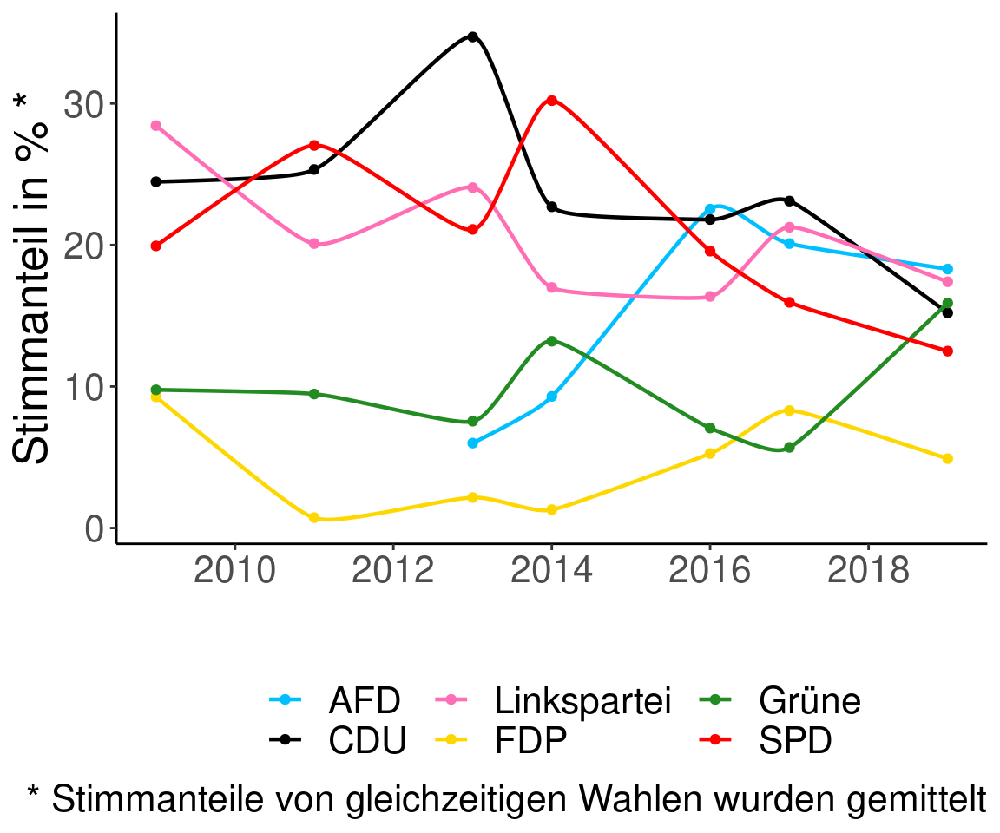
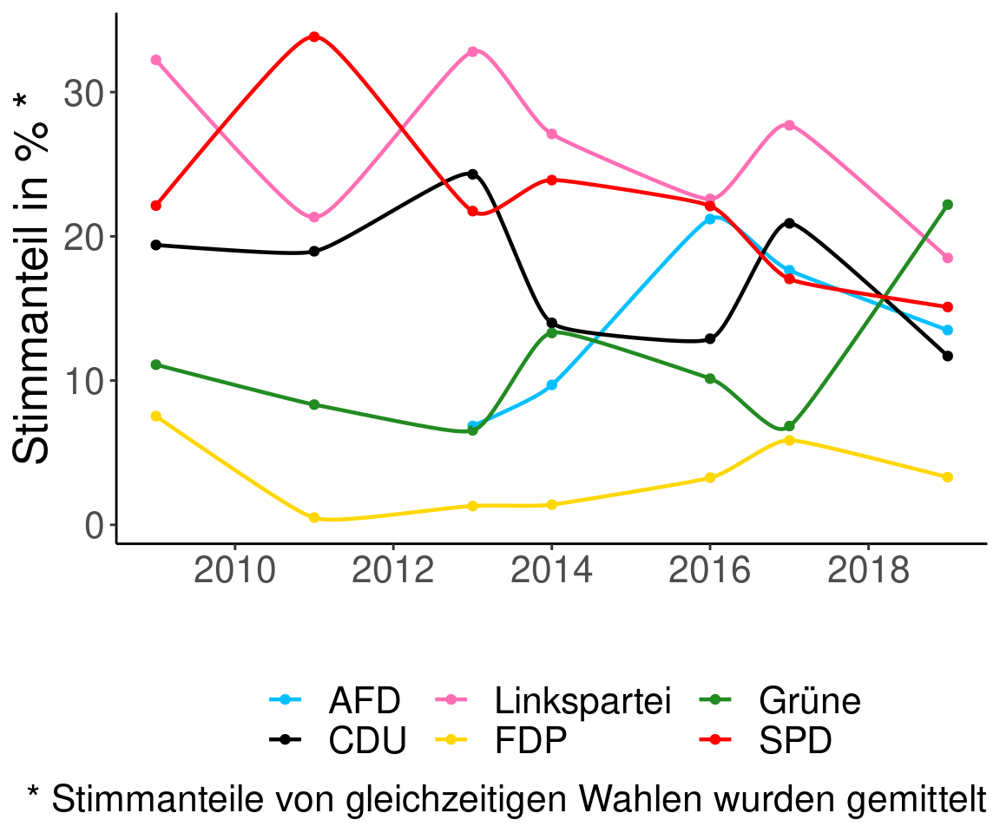
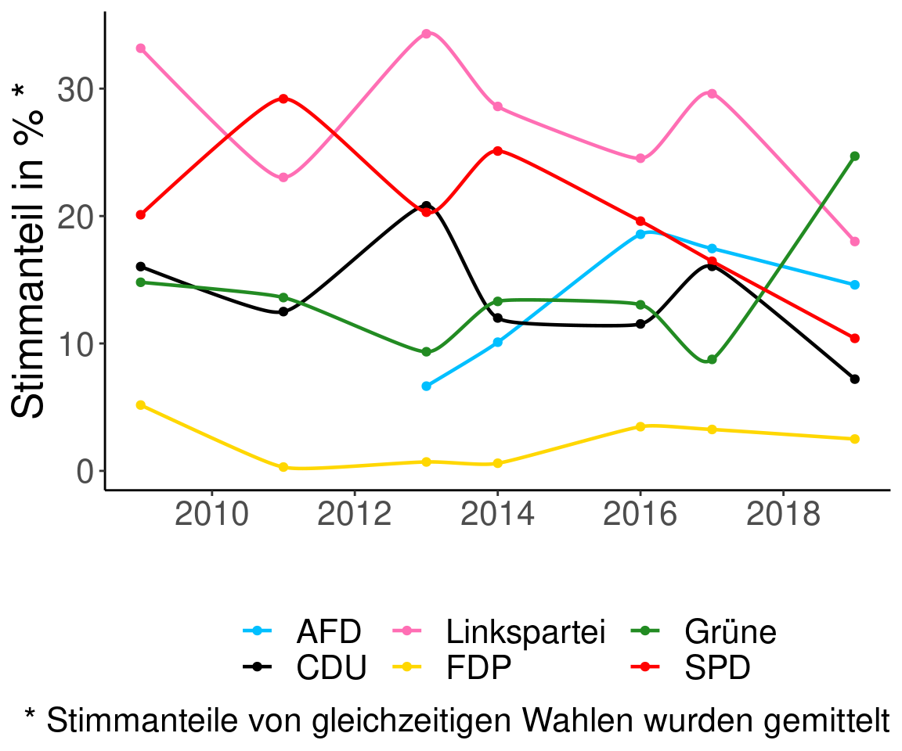
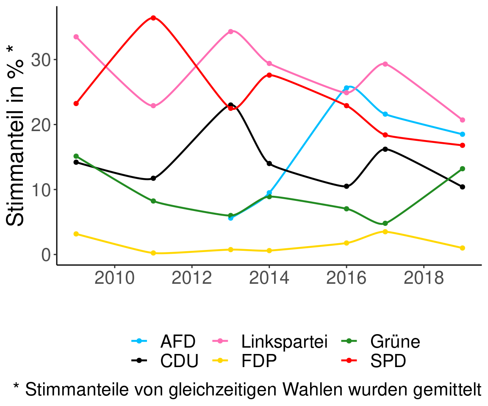
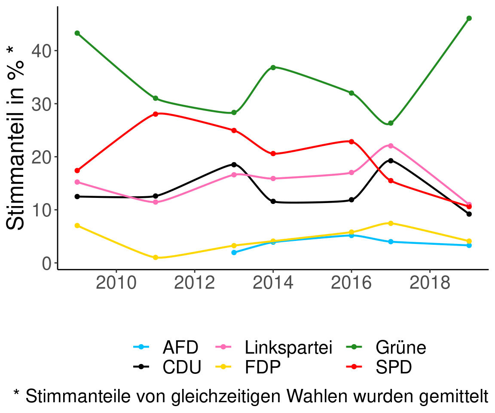

Kapitel 3 Zeitverläufe
3.1 Entwicklung der Wahlergebnisse der großen Parteien in Pankow 2009 bis 2019

3.2 Zeitverläufe pro Pankower Wahlbezirk
3.2.1 Wahlbezirk: 03101

3.2.2 Wahlbezirk: 03102
3.2.3 Wahlbezirk: 03103

3.2.4 Wahlbezirk: 03104

3.2.5 Wahlbezirk: 03105

3.2.6 Wahlbezirk: 03106
3.2.7 Wahlbezirk: 03107
3.2.8 Wahlbezirk: 03108
3.2.9 Wahlbezirk: 03109
3.2.10 Wahlbezirk: 03110
3.2.11 Wahlbezirk: 03111

3.2.12 Wahlbezirk: 03112
3.2.13 Wahlbezirk: 03113
3.2.14 Wahlbezirk: 03114
3.2.15 Wahlbezirk: 03115
3.2.16 Wahlbezirk: 03116
3.2.17 Wahlbezirk: 03117
3.2.18 Wahlbezirk: 03118
3.2.19 Wahlbezirk: 03201
3.2.20 Wahlbezirk: 03202
3.2.21 Wahlbezirk: 03203
3.2.22 Wahlbezirk: 03204
3.2.23 Wahlbezirk: 03205
3.2.24 Wahlbezirk: 03206
3.2.25 Wahlbezirk: 03207
3.2.26 Wahlbezirk: 03208
3.2.27 Wahlbezirk: 03209
3.2.28 Wahlbezirk: 03210

3.2.29 Wahlbezirk: 03211
3.2.30 Wahlbezirk: 03212
3.2.31 Wahlbezirk: 03213
3.2.32 Wahlbezirk: 03214
3.2.33 Wahlbezirk: 03215
3.2.34 Wahlbezirk: 03216
3.2.35 Wahlbezirk: 03217
3.2.36 Wahlbezirk: 03218
3.2.37 Wahlbezirk: 03301
3.2.38 Wahlbezirk: 03302
3.2.39 Wahlbezirk: 03303
3.2.40 Wahlbezirk: 03304

3.2.41 Wahlbezirk: 03305

3.2.42 Wahlbezirk: 03306
3.2.43 Wahlbezirk: 03307
3.2.44 Wahlbezirk: 03308
3.2.45 Wahlbezirk: 03309
3.2.46 Wahlbezirk: 03310
3.2.47 Wahlbezirk: 03311
3.2.48 Wahlbezirk: 03312
3.2.49 Wahlbezirk: 03313
3.2.50 Wahlbezirk: 03314
3.2.51 Wahlbezirk: 03315
3.2.52 Wahlbezirk: 03316
3.2.53 Wahlbezirk: 03317
3.2.54 Wahlbezirk: 03401
3.2.55 Wahlbezirk: 03402
3.2.56 Wahlbezirk: 03403
3.2.57 Wahlbezirk: 03404
3.2.58 Wahlbezirk: 03405
3.2.59 Wahlbezirk: 03406
3.2.60 Wahlbezirk: 03407
3.2.61 Wahlbezirk: 03408
3.2.62 Wahlbezirk: 03409
3.2.63 Wahlbezirk: 03410
3.2.64 Wahlbezirk: 03411
3.2.65 Wahlbezirk: 03412
3.2.66 Wahlbezirk: 03413
3.2.67 Wahlbezirk: 03414
3.2.68 Wahlbezirk: 03415
3.2.69 Wahlbezirk: 03501
3.2.70 Wahlbezirk: 03502
3.2.71 Wahlbezirk: 03503
3.2.72 Wahlbezirk: 03504
3.2.73 Wahlbezirk: 03505
3.2.74 Wahlbezirk: 03506
3.2.75 Wahlbezirk: 03507
3.2.76 Wahlbezirk: 03508
3.2.77 Wahlbezirk: 03509
3.2.78 Wahlbezirk: 03510
3.2.79 Wahlbezirk: 03511
3.2.80 Wahlbezirk: 03512
3.2.81 Wahlbezirk: 03513

3.2.82 Wahlbezirk: 03514
3.2.83 Wahlbezirk: 03515
3.2.84 Wahlbezirk: 03516
3.2.85 Wahlbezirk: 03517
3.2.86 Wahlbezirk: 03601
3.2.87 Wahlbezirk: 03602
3.2.88 Wahlbezirk: 03603
3.2.89 Wahlbezirk: 03604
3.2.90 Wahlbezirk: 03605
3.2.91 Wahlbezirk: 03606
3.2.92 Wahlbezirk: 03607
3.2.93 Wahlbezirk: 03608
3.2.94 Wahlbezirk: 03609
3.2.95 Wahlbezirk: 03610
3.2.96 Wahlbezirk: 03611
3.2.97 Wahlbezirk: 03612
3.2.98 Wahlbezirk: 03613
3.2.99 Wahlbezirk: 03614
3.2.100 Wahlbezirk: 03615
3.2.101 Wahlbezirk: 03616
3.2.102 Wahlbezirk: 03617
3.2.103 Wahlbezirk: 03618
3.2.104 Wahlbezirk: 03619
3.2.105 Wahlbezirk: 03620
3.2.106 Wahlbezirk: 03701
3.2.107 Wahlbezirk: 03702
3.2.108 Wahlbezirk: 03703
3.2.109 Wahlbezirk: 03704
3.2.110 Wahlbezirk: 03705
3.2.111 Wahlbezirk: 03706
3.2.112 Wahlbezirk: 03707
3.2.113 Wahlbezirk: 03708
3.2.114 Wahlbezirk: 03709
3.2.115 Wahlbezirk: 03710
3.2.116 Wahlbezirk: 03711
3.2.117 Wahlbezirk: 03712
3.2.118 Wahlbezirk: 03713
3.2.119 Wahlbezirk: 03714
3.2.120 Wahlbezirk: 03715
3.2.121 Wahlbezirk: 03716
3.2.122 Wahlbezirk: 03717
3.2.123 Wahlbezirk: 03801
3.2.124 Wahlbezirk: 03802
3.2.125 Wahlbezirk: 03803

3.2.126 Wahlbezirk: 03804
3.2.127 Wahlbezirk: 03805
3.2.128 Wahlbezirk: 03806
3.2.129 Wahlbezirk: 03807
3.2.130 Wahlbezirk: 03808
3.2.131 Wahlbezirk: 03809
3.2.132 Wahlbezirk: 03810
3.2.133 Wahlbezirk: 03811
3.2.134 Wahlbezirk: 03812
3.2.135 Wahlbezirk: 03813
3.2.136 Wahlbezirk: 03814
3.2.137 Wahlbezirk: 03815
3.2.138 Wahlbezirk: 03816
3.2.139 Wahlbezirk: 03817
3.2.140 Wahlbezirk: 03818
3.2.141 Wahlbezirk: 03819
3.2.142 Wahlbezirk: 03901
3.2.143 Wahlbezirk: 03902

3.2.144 Wahlbezirk: 03903
3.2.145 Wahlbezirk: 03904
3.2.146 Wahlbezirk: 03905
3.2.147 Wahlbezirk: 03906
3.2.148 Wahlbezirk: 03907
3.2.149 Wahlbezirk: 03908
3.2.150 Wahlbezirk: 03909
3.2.151 Wahlbezirk: 03910
3.2.152 Wahlbezirk: 03911
3.2.153 Wahlbezirk: 03912
3.2.154 Wahlbezirk: 03913
3.2.155 Wahlbezirk: 03914
3.2.156 Wahlbezirk: 03915
3.2.157 Wahlbezirk: 03916
3.2.158 Wahlbezirk: 03917
3.2.159 Wahlbezirk: 03918
3.2.160 Wahlbezirk: 03919

3.2.161 Wahlbezirk: 03119

3.2.162 Wahlbezirk: 03120
3.2.163 Wahlbezirk: 03121
3.2.164 Wahlbezirk: 03219
3.2.165 Wahlbezirk: 03220
3.2.166 Wahlbezirk: 03318
3.2.167 Wahlbezirk: 03319